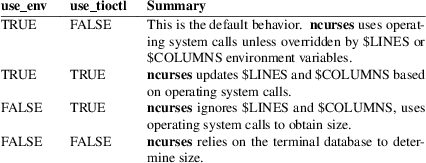

delay_output, filter, flushinp, getwin, key_name, keyname, nofilter, putwin, unctrl, use_env, use_tioctl, wunctrl − miscellaneous curses utility routines
#include <curses.h>
const char
*unctrl(chtype c);
wchar_t *wunctrl(cchar_t *c);
const char
*keyname(int c);
const char *key_name(wchar_t w);
void
filter(void);
void nofilter(void);
void
use_env(bool f);
void use_tioctl(bool f);
int
putwin(WINDOW *win, FILE
*filep);
WINDOW *getwin(FILE *filep);
int
delay_output(int ms);
int flushinp(void);
unctrl
The unctrl routine returns a character string which
is a printable representation of the character c,
ignoring attributes. Control characters are displayed in the
^X notation. Printing characters are displayed
as is. The corresponding wunctrl returns a printable
representation of a wide character.
keyname/key_name
The keyname routine returns a character string
corresponding to the key c:
|
• |
Printable characters are displayed as themselves, e.g., a one-character string containing the key. | ||
|
• |
Control characters are displayed in the ^X notation. | ||
|
• |
DEL (character 127) is displayed as ^?. | ||
|
• |
Values above 128 are either meta characters (if the screen has not been initialized, or if meta(3X) has been called with a TRUE parameter), shown in the M−X notation, or are displayed as themselves. In the latter case, the values may not be printable; this follows the X/Open specification. | ||
|
• |
Values above 256 may be the names of the names of function keys. | ||
|
• |
Otherwise (if there is no corresponding name) the function returns null, to denote an error. X/Open also lists an “UNKNOWN KEY” return value, which some implementations return rather than null. |
The corresponding key_name returns a character string corresponding to the wide-character value w. The two functions do not return the same set of strings; the latter returns null where the former would display a meta character.
filter/nofilter
The filter routine, if used, must be called before
initscr or newterm are called. Calling
filter causes these changes in initialization:
|
• |
LINES is set to 1; | ||
|
• |
the capabilities clear, cud1, cud, cup, cuu1, cuu, vpa are disabled; | ||
|
• |
the capability ed is disabled if bce is set; | ||
|
• |
and the home string is set to the value of cr. |
The nofilter routine cancels the effect of a preceding filter call. That allows the caller to initialize a screen on a different device, using a different value of $TERM. The limitation arises because the filter routine modifies the in-memory copy of the terminal information.
use_env
The use_env routine, if used, should be called before
initscr or newterm are called (because those
compute the screen size). It modifies the way ncurses
treats environment variables when determining the screen
size.
|
• |
Normally ncurses looks first at the terminal database for the screen size. |
If use_env was called with FALSE for parameter, it stops here unless use_tioctl was also called with TRUE for parameter.
|
• |
Then it asks for the screen size via operating system calls. If successful, it overrides the values from the terminal database. | ||
|
• |
Finally (unless use_env was called with FALSE parameter), ncurses examines the LINES or COLUMNS environment variables, using a value in those to override the results from the operating system or terminal database. |
Ncurses also updates the screen size in response to SIGWINCH, unless overridden by the LINES or COLUMNS environment variables,
use_tioctl
The use_tioctl routine, if used, should be called
before initscr or newterm are called (because
those compute the screen size). After use_tioctl is
called with TRUE as an argument, ncurses
modifies the last step in its computation of screen size as
follows:
|
• |
checks if the LINES and COLUMNS environment variables are set to a number greater than zero. | ||
|
• |
for each, ncurses updates the corresponding environment variable with the value that it has obtained via operating system call or from the terminal database. | ||
|
• |
ncurses re-fetches the value of the environment variables so that it is still the environment variables which set the screen size. |
The use_env and use_tioctl routines combine as summarized here:

putwin/getwin
The putwin routine writes all data associated with
window (or pad) win into the file to which
filep points. This information can be later retrieved
using the getwin function.
The getwin routine reads window related data stored in the file by putwin. The routine then creates and initializes a new window using that data. It returns a pointer to the new window. There are a few caveats:
|
• |
the data written is a copy of the WINDOW structure, and its associated character cells. The format differs between the wide-character (ncursesw) and non-wide (ncurses) libraries. You can transfer data between the two, however. | ||
|
• |
the retrieved window is always created as a top-level window (or pad), rather than a subwindow. | ||
|
• |
the window’s character cells contain the color pair value, but not the actual color numbers. If cells in the retrieved window use color pairs which have not been created in the application using init_pair, they will not be colored when the window is refreshed. |
delay_output
The delay_output routine inserts an ms
millisecond pause in output. This routine should not be used
extensively because padding characters are used rather than
a CPU pause. If no padding character is specified, this uses
napms to perform the delay.
flushinp
The flushinp routine throws away any typeahead that
has been typed by the user and has not yet been read by the
program.
Except for flushinp, routines that return an integer return ERR upon failure and OK (SVr4 specifies only "an integer value other than ERR") upon successful completion.
Routines that return pointers return NULL on error.
X/Open does not define any error conditions. In this implementation
flushinp
returns an error if the terminal was not initialized.
putwin
returns an error if the associated fwrite calls return an error.
filter
The SVr4 documentation describes the action of filter
only in the vaguest terms. The description here is adapted
from the XSI Curses standard (which erroneously fails to
describe the disabling of cuu).
keyname
The keyname function may return the names of
user-defined string capabilities which are defined in the
terminfo entry via the −x option of tic.
This implementation automatically assigns at run-time
keycodes to user-defined strings which begin with
“k”. The keycodes start at KEY_MAX, but are not
guaranteed to be the same value for different runs because
user-defined codes are merged from all terminal descriptions
which have been loaded. The use_extended_names(3X)
function controls whether this data is loaded when the
terminal description is read by the library.
nofilter/use_tioctl
The nofilter and use_tioctl routines are
specific to ncurses. They were not supported on
Version 7, BSD or System V implementations. It is
recommended that any code depending on ncurses
extensions be conditioned using NCURSES_VERSION.
putwin/getwin
file-format
The putwin and getwin functions have several
issues with portability:
|
• |
The files written and read by these functions use an implementation-specific format. Although the format is an obvious target for standardization, it has been overlooked. |
Interestingly enough, according to the copyright dates in Solaris source, the functions (along with scr_init, etc.) originated with the University of California, Berkeley (in 1982) and were later (in 1988) incorporated into SVr4. Oddly, there are no such functions in the 4.3BSD curses sources.
|
• |
Most implementations simply dump the binary WINDOW structure to the file. These include SVr4 curses, NetBSD and PDCurses, as well as older ncurses versions. This implementation (as well as the X/Open variant of Solaris curses, dated 1995) uses textual dumps. |
The implementations which use binary dumps use block-I/O (the fwrite and fread functions). Those that use textual dumps use buffered-I/O. A few applications may happen to write extra data in the file using these functions. Doing that can run into problems mixing block- and buffered-I/O. This implementation reduces the problem on writes by flushing the output. However, reading from a file written using mixed schemes may not be successful.
unctrl/wunctrl
The XSI Curses standard, Issue 4 describes these functions.
It states that unctrl and wunctrl will return
a null pointer if unsuccessful, but does not define any
error conditions. This implementation checks for three
cases:
|
• |
the parameter is a 7-bit US−ASCII code. This is the case that X/Open Curses documented. | ||
|
• |
the parameter is in the range 128−159, i.e., a C1 control code. If use_legacy_coding(3X) has been called with a 2 parameter, unctrl returns the parameter, i.e., a one-character string with the parameter as the first character. Otherwise, it returns “~@”, “~A”, etc., analogous to “^@”, “^A”, C0 controls. |
X/Open Curses does not document whether unctrl can be called before initializing curses. This implementation permits that, and returns the “~@”, etc., values in that case.
|
• |
parameter values outside the 0 to 255 range. unctrl returns a null pointer. |
The strings returned by unctrl in this implementation are determined at compile time, showing C1 controls from the upper-128 codes with a “~” prefix rather than “^”. Other implementations have different conventions. For example, they may show both sets of control characters with “^”, and strip the parameter to 7 bits. Or they may ignore C1 controls and treat all of the upper-128 codes as printable. This implementation uses 8 bits but does not modify the string to reflect locale. The use_legacy_coding(3X) function allows the caller to change the output of unctrl.
Likewise, the meta(3X) function allows the caller to change the output of keyname, i.e., it determines whether to use the “M−” prefix for “meta” keys (codes in the range 128 to 255). Both use_legacy_coding(3X) and meta(3X) succeed only after curses is initialized. X/Open Curses does not document the treatment of codes 128 to 159. When treating them as “meta” keys (or if keyname is called before initializing curses), this implementation returns strings “M−^@”, “M−^A”, etc.
X/Open Curses documents unctrl as declared in <unctrl.h>, which ncurses does. However, ncurses’ <curses.h> includes <unctrl.h>, matching the behavior of SVr4 curses. Other implementations may not do that.
use_env/use_tioctl
If ncurses is configured to provide the sp-functions
extension, the state of use_env and use_tioctl
may be updated before creating each screen rather
than once only (curs_sp_funcs(3X)). This feature of
use_env is not provided by other implementation of
curses.
curses(3X), curs_initscr(3X), curs_inopts(3X), curs_kernel(3X), curs_scr_dump(3X), curs_sp_funcs(3X), curs_variables(3X), legacy_coding(3X).